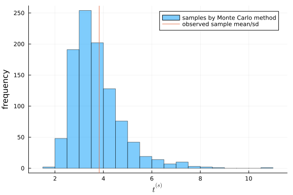
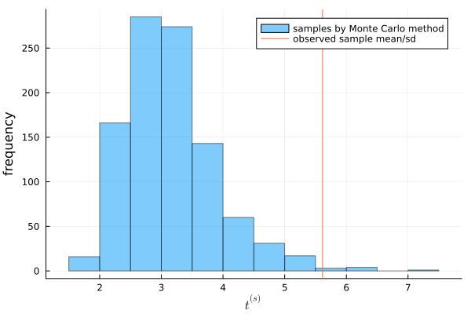

Exercise 4.3 Solution Example - Hoff, A First Course in Bayesian Statistical Methods
標準ベイズ統計学 演習問題 4.3 解答例
a)
answer
using Distributions
using Random
Random.seed!(1234)
y_A = [12, 9, 12, 14, 13, 13, 15, 8, 15, 6]
y_B = [11, 11, 10, 9, 9, 8, 7, 10, 6, 8, 8, 9, 7]
n_A, sy_A = length(y_A) , sum(y_A)
n_B, sy_B = length(y_B) , sum(y_B)
a₀_A = 120
b₀_A = 10
a₀_B = 12
b₀_B = 1
# Posterior distributions
dist_A = Gamma(a₀_A + sy_A, 1/(b₀_A + n_A))
dist_B = Gamma(a₀_B + sy_B, 1/(b₀_B + n_B))
n_A = 10
# %%
t_mc = []
for s in 1:1000
θ_A = rand(dist_A)
y_A_mc = rand(Poisson(θ_A), n_A)
avg = mean(y_A_mc)
sd = std(y_A_mc)
append!(t_mc, avg/sd )
end
:RESULTS:

You can see that the observed value of \(t\) is in the middle of the distribution of \(t^{(s)}\). From this, we can conclude that the Poisson model is a good fit for the population of this data.
b)
answer
t_mc = []
for s in 1:1000
θ_B = rand(dist_B)
y_B_mc = rand(Poisson(θ_B), n_B)
avg = mean(y_B_mc)
sd = std(y_B_mc)
append!(t_mc, avg/sd )
end
:RESULTS:

You can see that the observed value of \(t\) is located at the quite edge of the distribution. From this, we can conclude that the Poisson model cannot reflect the feature of the population.